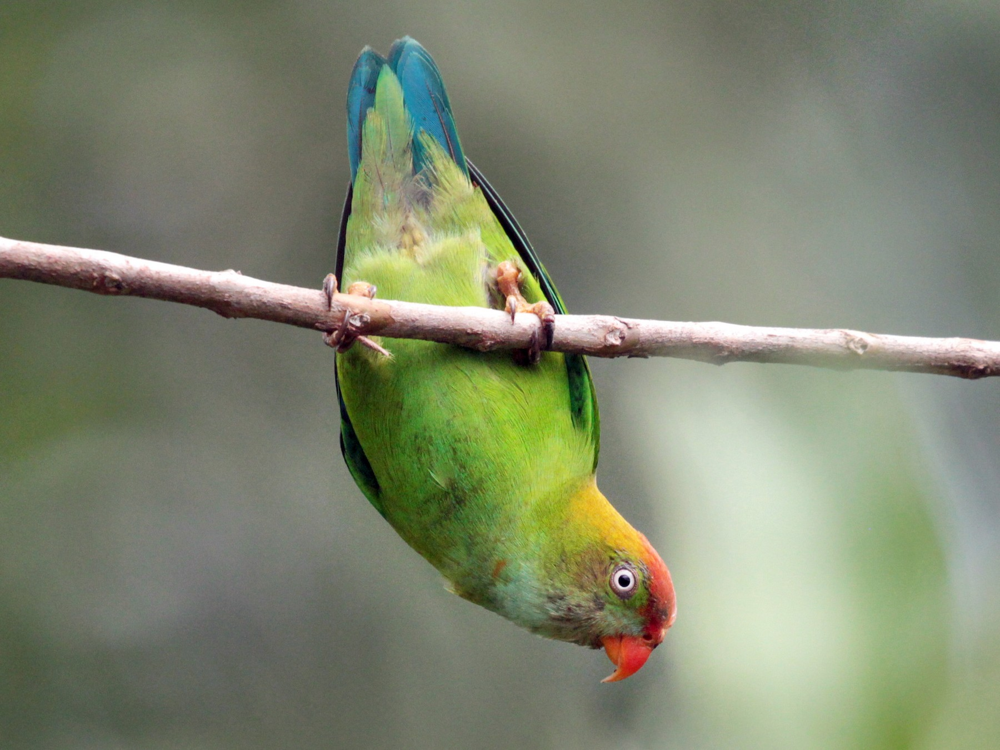

WHERE TO SPOT THESE RARE SPECIES?
Click here: YALA NATIONAL PARK AND WILPATTU NATIONAL PARK AND ACROSS THE ISLAND AS WELL.
THE SRI LANKAN HANGING PARROT

The Sri Lanka Hanging Parrot is a small, green parakeet with a
distinctive blue face. Found only in Sri Lanka, it is known for its unique behavior of hanging
upside down while feeding. The species is categorized as "Near Threatened" due to habitat loss,
emphasizing the need for conservation efforts.
CEYLON SUPERFOWL
The Ceylon Spurfowl, also known as the Sri Lanka Junglefowl, is a bird species endemic to the
island. With striking plumage featuring vibrant colors and distinctive markings,
it is considered the national bird of Sri Lanka. These ground-dwelling birds inhabit the dense
undergrowth of the island's forests and are known for their distinctive calls during the
breeding season.
PURPLE-FACED LANGUR
this primate species is endemic to Sri Lanka and is characterized by its distinct purple face
and grayish fur. They primarily inhabit the montane forests of the central highlands and are
herbivores, feeding on leaves, fruits, and flowers.
HUMP-NOSED LIZARD

The hump-nosed lizard is a unique reptile species found only in Sri Lanka. Known for its
distinctive appearance, which includes a hump-like structure on its nose, this lizard is found
in the wet zone forests of the island. Its arboreal lifestyle and cryptic coloration help it
blend into the dense vegetation.
TOQUE MACAQUE
The toque macaque is a species of monkey endemic to Sri Lanka. Recognizable by its unique
hairstyle resembling a "toque" hat, this macaque species can be found in various habitats,
including forests, rural areas, and urban settings. They are known for their social behavior and
adaptability.